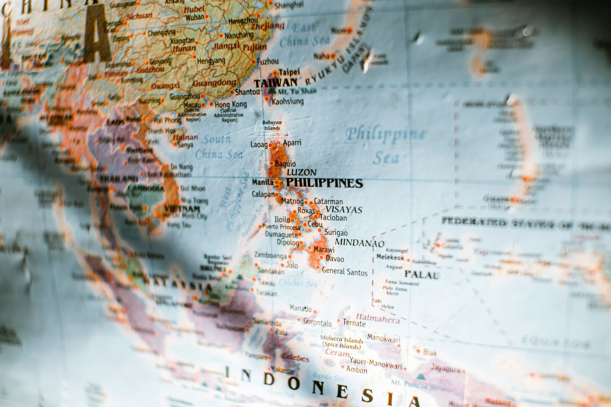

Anatomy of a divide.
The "digital divide" sounds like a line you either cross or don't. The reality is a series of gates — and clearing the first one rarely opens the rest.
By headline numbers, the Philippines looks connected: roughly 84% of the population used the internet at the start of 2025, and the country is consistently among the world's heaviest users of social media.
But averages hide the gap. About 18.8 million Filipinos were still entirely offline in early 2025, and only around 28% of households had a fixed broadband connection in 2023 — far behind Vietnam (79%), Thailand (55%), and Malaysia (54%). The Philippines alone accounts for more than half of all people in Southeast Asia who remain unconnected to mobile broadband.
One divide, three levels.
Digital-media scholars stopped treating the divide as a single line decades ago. Tap each level to see how exclusion compounds.
The access divide
Do you have a device, a signal, and the money to stay on?
This is the layer most people picture: infrastructure and affordability. In an archipelago of more than 7,600 islands, laying cable is slow and expensive, so connection is overwhelmingly mobile-first and paid for by the gigabyte. For a low-income family, the barrier isn't only coverage — it's the recurring cost of data on a prepaid load.
The skills divide
Once online, can you actually do anything meaningful with it?
Researchers call this the second-level divide: the gap in digital literacy between users who can search, evaluate, create, and transact, and those whose use is limited to a single app. A phone that opens only social media is access without capability — present in the network, absent from its opportunities.
The outcomes divide
Does being online translate into real advantage in your life?
The third-level divide asks who converts access and skill into tangible returns — better jobs, education, income, and services. This is where early inequalities multiply: those already advantaged extract far more value from the same connection, so going online can widen the gap it was supposed to close.
The gap isn't closing. It's widening.
Between 2019 and 2022, internet use among the richest fifth of Filipinos surged — while the poorest fifth barely moved. Toggle the years.
Distance between the two groups: —
When connection follows wealth, the internet stops being the great equaliser and starts being the great amplifier.
This is the third-level divide made visible. The infrastructure is expanding — the number of cell towers nearly doubled from about 17,850 in 2020 to 35,043 in 2023 — yet the people who gain the most are those already positioned to benefit. Closing the access gap without closing the skills and outcomes gaps simply moves the inequality up a level.

An archipelago is a connectivity nightmare.
The Philippines is spread across more than 7,600 islands and 36,000 km of shoreline. Every kilometre of that geography makes terrestrial broadband harder and costlier to deploy, which is why the far-flung "last mile" is so often the last to connect — if it ever does.
The country's response leans on big infrastructure (a National Fiber Backbone aiming to lift broadband penetration from roughly 33% toward 65% by 2026) and on leapfrogging — skipping fixed lines for mobile and, increasingly, low-earth-orbit satellites that beam signal to islands cable can't reach.
New signal, old questions.
Satellites over cables
Low-earth-orbit constellations can light up remote islands in weeks, not the years a submarine cable demands — a genuine shortcut around hostile geography.
Access ≠ affordability
A signal a household can't afford is not access. New technology that reaches the poorest fifth at premium prices can reproduce the very divide it promises to erase.
Mobile-first everything
With nearly all connections running on 3G/4G/5G, the phone is the gateway. Designing public services to work well on cheap phones and thin data is itself a form of inclusion.
The lesson that runs through every level: technology sets the ceiling, but policy and literacy decide the floor. Forecasts of digital media's future tend to name expanding "global reach and accessibility" as the central opportunity — and a "digital bill of rights" as the safeguard that should come with it. Both treat being online as something closer to a right than a luxury.
That is the gap DigiSkills PH is built for: not waiting for the access divide to close on its own, but closing the skills divide offline, today, on the devices children already hold. To see what happens when that gap is left open, follow the divide into a single, decisive moment.